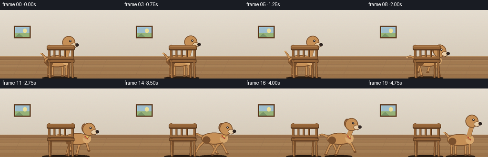
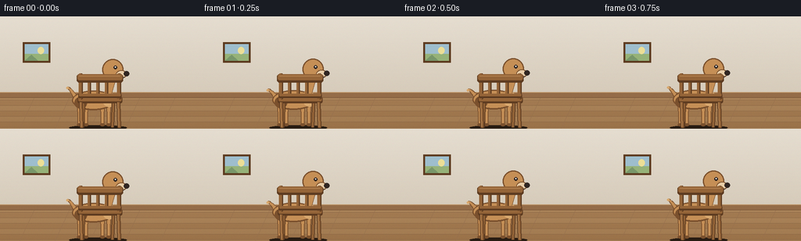

CODING AGENTS AS PIXEL WORLD MODELS
traex/Seed-2.1-Pro-0915 · dynamic_spatial_relationship_0005
点击播放 · 原生 RGB 像素
逐轮保存的候选
回放视频、检查图与代码变化。
每份候选均可单独播放。实际图片检查记录在下方工具轨迹中。
候选 01播放与检查图
点击播放 · 原生 RGB 像素


展开代码变化
--- 上一保存版本
+++ 本次保存版本
@@ -0,0 +1,273 @@
+"""Text-to-video: a dog is behind a chair, then runs to the right of the chair.
+
+Renders 20 RGB frames (256x144, 4 fps) procedurally with PIL at 2x superscale.
+"""
+import math
+import os
+
+import numpy as np
+from PIL import Image, ImageDraw
+
+import artifact_io
+
+W, H, N, FPS = 256, 144, 20, 4.0
+S = 2 # supersampling factor
+CW, CH = W * S, H * S
+
+# Palette
+WALL_TOP = (229, 221, 208)
+WALL_BOT = (214, 203, 186)
+FLOOR = (171, 132, 90)
+FLOOR_ALT = (164, 124, 83)
+FLOOR_LINE = (140, 104, 70)
+BOARD = (148, 108, 72)
+BOARD_HI = (190, 150, 105)
+
+WOOD = (148, 100, 56)
+WOOD_HI = (182, 132, 82)
+WOOD_DK = (94, 60, 33)
+
+FUR = (197, 143, 86)
+FUR_HI = (216, 168, 110)
+FUR_DK = (122, 80, 45)
+CREAM = (232, 205, 168)
+NOSE = (48, 38, 34)
+RED = (178, 58, 48)
+
+GY = 282 # ground line for paws (2x canvas)
+CHAIR_CX = 250 # chair center (2x canvas)
+
+
+def make_background():
+ """Wall gradient, picture frame, baseboard, plank floor."""
+ img = Image.new("RGB", (CW, CH))
+ px = img.load()
+ horizon = 200
+ for y in range(horizon):
+ f = y / horizon
+ col = tuple(int(WALL_TOP[c] + (WALL_BOT[c] - WALL_TOP[c]) * f) for c in range(3))
+ for x in range(CW):
+ px[x, y] = col
+ for y in range(horizon, CH):
+ f = (y - horizon) / (CH - horizon)
+ base = FLOOR_ALT if ((y - horizon) // 14) % 2 else FLOOR
+ col = tuple(int(base[c] - 10 * f) for c in range(3))
+ for x in range(CW):
+ px[x, y] = col
+ d = ImageDraw.Draw(img)
+ # plank seams
+ for y in range(horizon + 14, CH, 14):
+ d.line([(0, y), (CW, y)], fill=FLOOR_LINE, width=1)
+ for x in range(0, CW, 90):
+ d.line([(x, horizon + 2), (x - 40, CH)], fill=(150, 112, 78), width=1)
+ # framed picture on the left wall
+ d.rectangle([58, 66, 128, 118], fill=WOOD_DK)
+ d.rectangle([63, 71, 123, 113], fill=(158, 190, 205))
+ d.rectangle([63, 96, 123, 113], fill=(150, 178, 120))
+ d.ellipse([96, 78, 112, 96], fill=(236, 222, 150)) # sun
+ d.polygon([(63, 113), (80, 98), (96, 113)], fill=(120, 150, 105))
+ # baseboard
+ d.rectangle([0, horizon - 6, CW, horizon + 8], fill=BOARD)
+ d.line([(0, horizon - 6), (CW, horizon - 6)], fill=BOARD_HI, width=2)
+ d.line([(0, horizon + 8), (CW, horizon + 8)], fill=(110, 76, 48), width=1)
+ return img
+
+
+def draw_shadow(d, cx, w=64, alpha=70):
+ d.ellipse([cx - w, GY - 3, cx + w, GY + 9], fill=(40, 28, 18, alpha))
+
+
+def tail_points(cx, by, vec):
+ """Curved tail from rear of body; returns polyline points."""
+ base = (cx - 46, by - 6)
+ tip = (base[0] + vec[0] * 40, base[1] + vec[1] * 40)
+ ctrl = (base[0] + vec[0] * 22 - 6, base[1] + vec[1] * 22 - 14)
+ pts = []
+ for i in range(7):
+ t = i / 6
+ x = (1 - t) ** 2 * base[0] + 2 * (1 - t) * t * ctrl[0] + t ** 2 * tip[0]
+ y = (1 - t) ** 2 * base[1] + 2 * (1 - t) * t * ctrl[1] + t ** 2 * tip[1]
+ pts.append((x, y))
+ return pts
+
+
+def draw_tail(d, pts):
+ for i in range(len(pts) - 1):
+ wdt = max(3, int(9 - i * 1.1))
+ d.line([pts[i], pts[i + 1]], fill=FUR_DK, width=wdt + 3)
+ for i in range(len(pts) - 1):
+ wdt = max(2, int(9 - i * 1.1))
+ d.line([pts[i], pts[i + 1]], fill=FUR, width=wdt)
+ d.ellipse([pts[-1][0] - 3, pts[-1][1] - 3, pts[-1][0] + 3, pts[-1][1] + 3], fill=FUR_HI)
+
+
+def draw_leg(d, hip, paw, lift):
+ knee = ((hip[0] + paw[0]) / 2, (hip[1] + paw[1]) / 2 - (13 if lift > 2 else 9))
+ d.line([hip, knee], fill=FUR_DK, width=12)
+ d.line([knee, paw], fill=FUR_DK, width=10)
+ d.line([hip, knee], fill=FUR, width=8)
+ d.line([knee, paw], fill=FUR, width=6)
+ d.ellipse([paw[0] - 6, paw[1] - 3, paw[0] + 7, paw[1] + 4], fill=FUR_DK)
+
+
+def draw_dog(img, cx, mode, phase, t, alert):
+ """mode: 'idle' or 'run'. Dog faces right.
+
+ alert in [0, 1]: raises head/neck so the idle dog peeks over the chair back.
+ """
+ d = ImageDraw.Draw(img)
+ running = mode == "run"
+ amp = 0.95 if running else 0.0
+ bob = (abs(math.sin(phase)) * 4.5) if running else (math.sin(t * 2.2) * 1.6)
+ by = 214 - bob # body center y
+ lean = 7 if running else 0
+ hl = 38 * alert # head lift
+
+ # ---- legs (drawn under the body) ----
+ hip_xs = [-38, -21, 21, 37]
+ offsets = [0.0, math.pi, math.pi, 0.0] # diagonal trot pairing
+ for hx, off in zip(hip_xs, offsets):
+ ph = phase + off
+ swing = math.sin(ph) * amp
+ lift = max(0.0, math.cos(ph)) * (17 if running else 0)
+ hip = (cx + hx, by + 14)
+ paw = (cx + hx + swing * 42, GY - 5 - lift)
+ draw_leg(d, hip, paw, lift)
+
+ # ---- tail ----
+ if running:
+ vec = (-0.95, -0.18 + 0.05 * math.sin(phase))
+ pts = tail_points(cx + lean * 0.3, by, vec)
+ else:
+ wag = 0.22 * math.sin(t * 4.0)
+ vec = (-0.55, -0.62 + wag)
+ pts = tail_points(cx, by, vec)
+ draw_tail(d, pts)
+
+ # ---- body ----
+ d.ellipse([cx - 56 + lean, by - 24, cx + 52 + lean, by + 26], fill=FUR_DK)
+ d.ellipse([cx - 53 + lean, by - 21, cx + 49 + lean, by + 22], fill=FUR)
+ # chest / shoulder
+ d.ellipse([cx + 22 + lean, by - 19, cx + 56 + lean, by + 18], fill=FUR_HI)
+ # back haunch hint
+ d.ellipse([cx - 50 + lean, by - 8, cx - 18 + lean, by + 22], fill=FUR_DK)
+
+ # ---- neck ----
+ neck = [(cx + 24 + lean, by - 6), (cx + 40 + lean, by - 22 - hl),
+ (cx + 56 + lean, by - 16 - hl), (cx + 40 + lean, by + 2)]
+ d.polygon(neck, fill=FUR_DK)
+ d.polygon([(p[0] - 1, p[1] - 1) for p in neck], fill=FUR)
+
+ # ---- head ----
+ hx, hy = cx + 48 + lean, by - 40 - hl
+ # ears (behind head): floppy, swept back while running
+ ear_swing = -9 if running else int(3 * math.sin(t * 3))
+ d.ellipse([hx - 22 + ear_swing, hy - 24, hx + 2 + ear_swing, hy + 14], fill=FUR_DK)
+ d.ellipse([hx - 18 + ear_swing, hy - 19, hx - 2 + ear_swing, hy + 8], fill=(178, 120, 80))
+ d.ellipse([hx - 27, hy - 27, hx + 27, hy + 27], fill=FUR_DK)
+ d.ellipse([hx - 24, hy - 24, hx + 24, hy + 24], fill=FUR)
+ # muzzle
+ d.ellipse([hx + 8, hy + 2, hx + 36, hy + 22], fill=FUR_DK)
+ d.ellipse([hx + 10, hy + 4, hx + 34, hy + 20], fill=CREAM)
+ # nose
+ d.ellipse([hx + 28, hy + 4, hx + 42, hy + 17], fill=NOSE)
+ # eye
+ d.ellipse([hx + 2, hy - 10, hx + 11, hy - 1], fill=NOSE)
+ d.ellipse([hx + 5, hy - 8, hx + 8, hy - 5], fill=(245, 240, 230))
+ # mouth
+ d.arc([hx + 12, hy + 10, hx + 30, hy + 24], start=10, end=70, fill=NOSE, width=2)
+ # collar
+ d.line([(cx + 30 + lean, by - 12), (cx + 44 + lean, by + 2)], fill=RED, width=5)
+ d.ellipse([cx + 40 + lean - 3, by - 8 - 3, cx + 40 + lean + 3, by - 8 + 3], fill=(230, 200, 90))
+
+
+def draw_chair(img):
+ d = ImageDraw.Draw(img)
+ cx = CHAIR_CX
+ # rear legs (slightly behind seat)
+ for lx in (cx - 36, cx + 40):
+ d.line([(lx, 206), (lx - 3, GY + 2)], fill=WOOD_DK, width=9)
+ d.line([(lx, 206), (lx - 3, GY + 2)], fill=WOOD, width=5)
+ # seat
+ d.rounded_rectangle([cx - 52, 206, cx + 62, 222], radius=4, fill=WOOD_DK)
+ d.rounded_rectangle([cx - 50, 206, cx + 60, 217], radius=3, fill=WOOD)
+ d.line([(cx - 48, 209), (cx + 56, 209)], fill=WOOD_HI, width=2)
+ # front legs
+ for lx in (cx - 44, cx + 52):
+ d.line([(lx, 220), (lx + 2, GY + 3)], fill=WOOD_DK, width=10)
+ d.line([(lx, 220), (lx + 2, GY + 3)], fill=WOOD, width=6)
+ d.line([(lx - 2, 220), (lx, GY)], fill=WOOD_HI, width=2)
+ # back posts
+ for px in (cx - 44, cx + 54):
+ d.rounded_rectangle([px - 5, 146, px + 5, 212], radius=3, fill=WOOD_DK)
+ d.rounded_rectangle([px - 5, 146, px + 2, 212], radius=3, fill=WOOD)
+ # spindles
+ for sx in (cx - 22, cx, cx + 22):
+ d.rounded_rectangle([sx - 4, 166, sx + 4, 206], radius=3, fill=WOOD_DK)
+ d.rounded_rectangle([sx - 4, 166, sx + 1, 206], radius=3, fill=WOOD)
+ # lower rail
+ d.rounded_rectangle([cx - 50, 198, cx + 60, 209], radius=3, fill=WOOD_DK)
+ d.rounded_rectangle([cx - 48, 198, cx + 58, 204], radius=2, fill=WOOD)
+ # top rail
+ d.rounded_rectangle([cx - 54, 148, cx + 64, 169], radius=6, fill=WOOD_DK)
+ d.rounded_rectangle([cx - 52, 148, cx + 62, 163], radius=5, fill=WOOD)
+ d.line([(cx - 48, 152), (cx + 56, 152)], fill=WOOD_HI, width=2)
+
+
+def ease(u):
+ return 0.5 - 0.5 * math.cos(math.pi * u)
+
+
+def frame_params(i):
+ """Return (dog_cx, mode, phase, time_seconds, alert) for frame i."""
+ x0, x1 = 240, 396
+ if i <= 5:
+ return x0, "idle", 0.3 * math.sin(i * 0.8), i / FPS, 1.0
+ if i <= 16:
+ u = ease((i - 6) / 10)
+ # head lowers into the run (6..8), rises again as the dog stops (15..17)
+ if i <= 8:
+ alert = 1.0 - ease((i - 6) / 2)
+ elif i >= 15:
+ alert = ease((i - 15) / 2)
+ else:
+ alert = 0.0
+ return x0 + (x1 - x0) * u, "run", (i - 6) * 1.35, i / FPS, alert
+ alert = 1.0 if i >= 18 else ease((i - 15) / 2)
+ return x1, "idle", 0.0, i / FPS, alert
+
+
+def render_frame(i):
+ bg = make_background()
+ scene = bg.convert("RGBA")
+ d = ImageDraw.Draw(scene)
+
+ cx, mode, phase, t, alert = frame_params(i)
+ # shadows first
+ draw_shadow(d, cx, w=62 if mode == "idle" else 58, alpha=64)
+ draw_shadow(d, CHAIR_CX, w=74, alpha=80)
+
+ # dog behind chair, then chair occludes it
+ draw_dog(scene, cx, mode, phase, t, alert)
+ draw_chair(scene)
+
+ scene = scene.convert("RGB")
+ # subtle grain to kill banding
+ arr = np.asarray(scene).astype(np.int16)
+ rng = np.random.default_rng(1000 + i)
+ arr = arr + rng.integers(-2, 3, size=arr.shape)
+ arr = np.clip(arr, 0, 255).astype(np.uint8)
+ scene = Image.fromarray(arr)
+ out = scene.resize((W, H), Image.Resampling.LANCZOS)
+ return np.asarray(out, dtype=np.uint8)
+
+
+def main():
+ frames = np.stack([render_frame(i) for i in range(N)], axis=0)
+ case_dir = os.path.dirname(os.path.abspath(__file__))
+ artifact_io.save(frames, case_dir)
+ print(f"saved {frames.shape} to {case_dir}")
+
+
+if __name__ == "__main__":
+ main()
可观测工具轨迹
实际执行的命令与返回图片。
命令 1exit 0
/bin/bash -lc 'cat prompt.txt GENERATION_RULES.md task_spec.json 2>/dev/null; ls -la'
命令 2exit 0
/bin/bash -lc 'cat artifact_io.py; python3 -c "import PIL, numpy; print(PIL.__version__, numpy.__version__)"'
命令 3exit 0
/bin/bash -lc 'cd . && time python3 generate.py && ls -la'
命令 4exit 0
/bin/bash -lc "cd . && python3 - <<'EOF'
import numpy as np
from PIL import Image
frames = np.stack([np.asarray(Image.open(f\"frames/{i:02d}.png\")) for i in range(20)])
print(\"shape\", frames.shape, \"range\", frames.min(), frames.max())
def mask_fur(a):
r,g,b = a[...,0].astype(int), a[...,1].astype(int), a[...,2].astype(int)
return (r>140)&(r<235)&(g>95)&(g<185)&(b<130)&(r-g>25)&(g-b>20)
def mask_wood(a):
r,g,b = a[...,0].astype(int), a[...,1].astype(int), a[...,2].astype(int)
return (r>80)&(r<200)&(g>55)&(g<145)&(b<95)&(r-g>25)
for i in [0,3,5,6,8,11,14,16,17,19]:
fur = mask_fur(frames[i]); wood = mask_wood(frames[i])
ys,xs = np.where(fur)
yw,xw = np.where(wood)
print(f\"f{i:02d} fur n={fur.sum():4d} x[{xs.min():3d},{xs.max():3d}] y[{ys.min():3d},{ys.max():3d}] \"
f\"chair x[{xw.min():3d},{xw.max():3d}] y[{yw.min():3d},{yw.max():3d}]\")
# ASCII render helper
chars = \" .:-=+*#%@\"
def ascii_render(a, label):
small = np.asarray(Image.fromarray(a).resize((64, 36), Image.Resampling.LANCZOS)).astype(int)
fur = mask_fur(np.asarray(Image.fromarray(a).resize((64,36), Image.Resampling.LANCZOS)))
wood = mask_wood(np.asarray(Image.fromarray(a).resize((64,36), Image.Resampling.LANCZOS)))
lum = (0.3*small[...,0]+0.59*small[...,1]+0.11*small[...,2])
out = []
for y in range(36):
row=\"\"
for x in range(64):
if fur[y,x]: row+=\"D\"
elif wood[y,x]: row+=\"C\"
else: row+=chars[min(9,int(lum[y,x]/26))]
out.append(row)
print(f\"--- {label} (D=dog, C=chair) ---\")
print(\"\\n\".join(out))
for i in (0, 11, 19):
ascii_render(frames[i], f\"frame {i}\")
EOF"保存候选 1 份；完成命令 4 次；可验证图片返回 0 张。原始 API 响应与完整日志保留在本地。